Savoirs
Comprendre les enjeux d’un projet environnemental, puis relier la question aux sites, aux acteurs et aux données disponibles.
Concevoir un projet · progression
Élec’Sport, Phénix Végétal et WildWay montrent trois niveaux d’exigence : proposer, organiser, puis cadrer une réponse avec des acteurs et des contraintes.
L1 · SAÉ23 · L’environnement au cœur de l’action
La consigne était de concevoir un projet de protection de l’environnement. J’ai proposé l’idée d’utiliser des équipements sportifs pour produire de l’énergie et sensibiliser les étudiants. Mathilde et moi avons construit la présentation à deux : objectifs, fonctionnement envisagé, communication et budget indicatif.
La diapositive d’objectifs montre les intentions, mais elle ne démontre ni qu’une machine a été installée ni qu’une quantité d’électricité a été produite. Le carnet de bord retrouvé est surtout un modèle non rempli ; je n’en tire pas une preuve de suivi. Cette première SAÉ montre surtout ma capacité à formuler et présenter une idée.
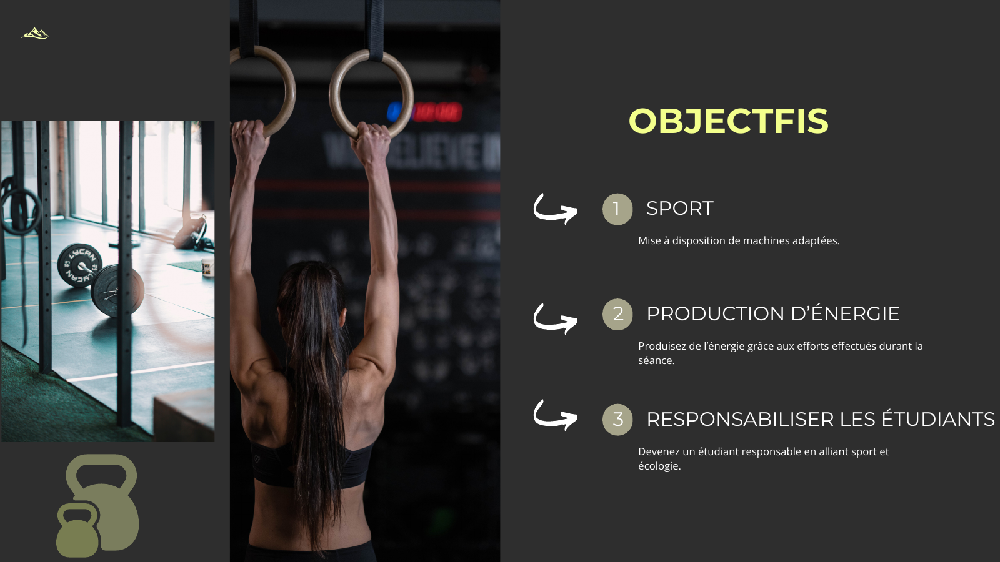
Agrandir la preuveÀ regarder : la proposition lie sport, production d’énergie et sensibilisation.
Lire les pages sélectionnées ↗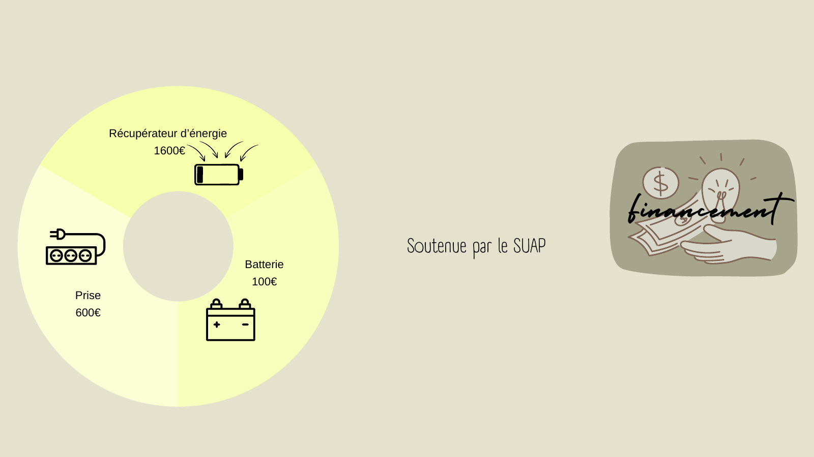
Agrandir la preuveÀ regarder : les postes de dépenses envisagés ; ce sont des estimations de conception, pas des achats réalisés.
Lire les pages sélectionnées ↗Ma limite en L1 : l’idée est claire, mais la faisabilité et les effets attendus ne sont pas encore démontrés.
L2 · SAÉ341 · écosystèmes méditerranéens
Notre équipe SEGE14 a choisi d’étudier la régénération de maquis méditerranéens après incendie. La réponse devait relier une question écologique, des sites comparables, des protocoles faisables et un calendrier. Le projet est une proposition scientifique : les mesures de terrain décrites dans le livret n’ont pas toutes été réalisées pendant cette SAÉ.
Le journal d’équipe me nomme animateur lors de la première réunion, organisateur du planning lors d’une autre et relecteur de diapositives. Il garde une trace utile de mes décisions avec les autres. Le rétroplanning et le livret de protocoles montrent ensuite comment l’idée s’est transformée en étapes et en méthodes ; la présentation finale rend le projet partageable.
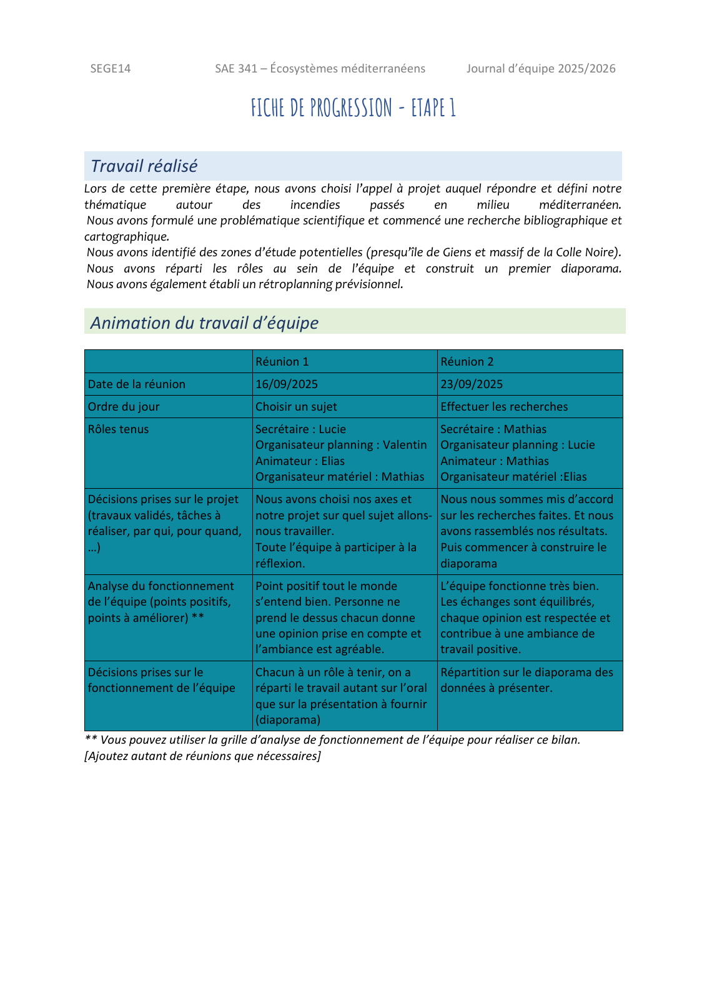
Agrandir la preuveÀ regarder : mon nom dans la ligne des rôles ; le groupe commence aussi à fixer problématique et sites.
Lire les pages sélectionnées ↗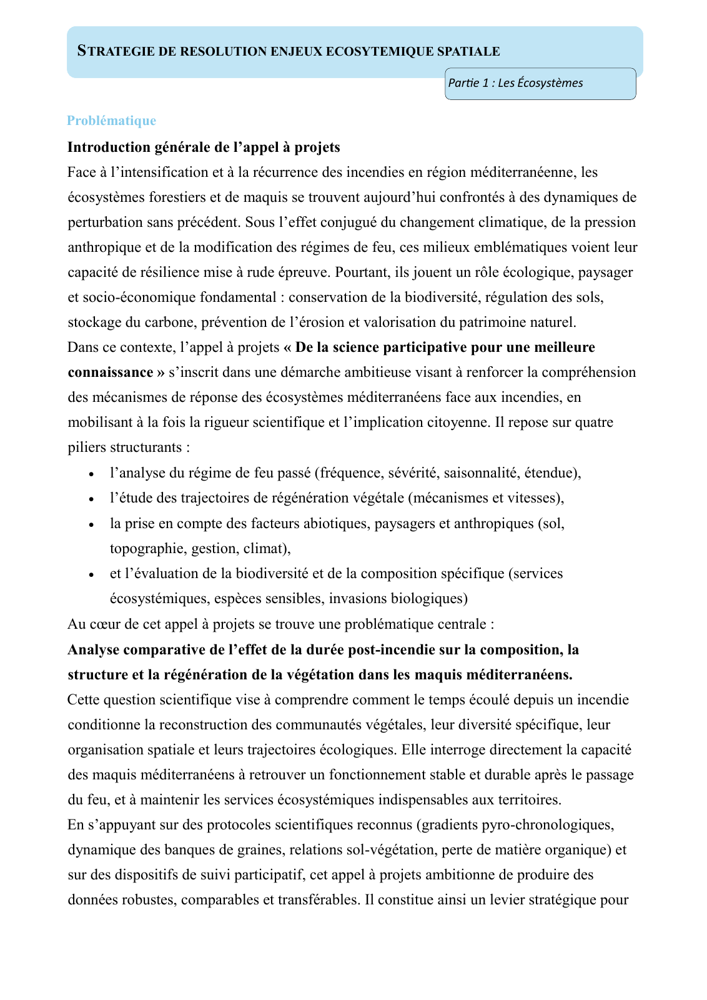
Agrandir la preuveÀ regarder : les protocoles sont conçus pour comparer les sites ; leur mise en œuvre ne doit pas être supposée.
Lire les pages sélectionnées ↗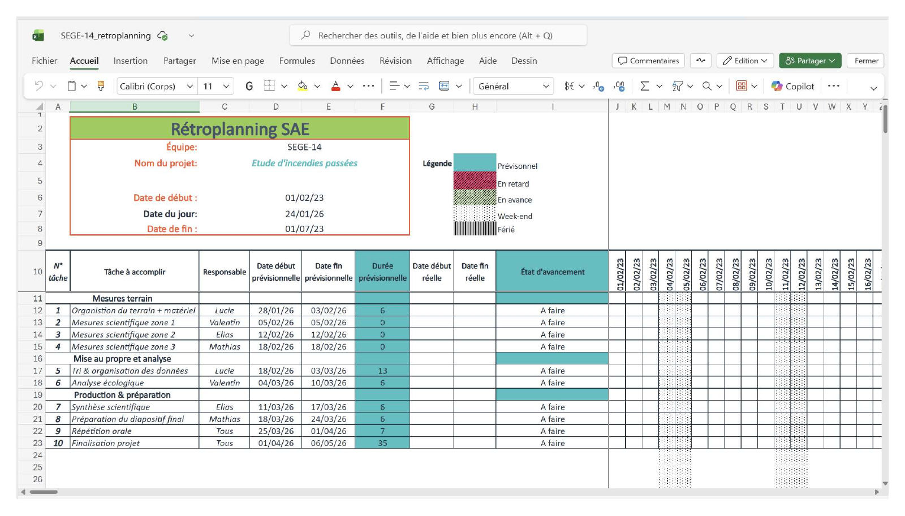
Agrandir la preuveÀ regarder : les périodes et les tâches prévues par l’équipe.
Lire les pages sélectionnées ↗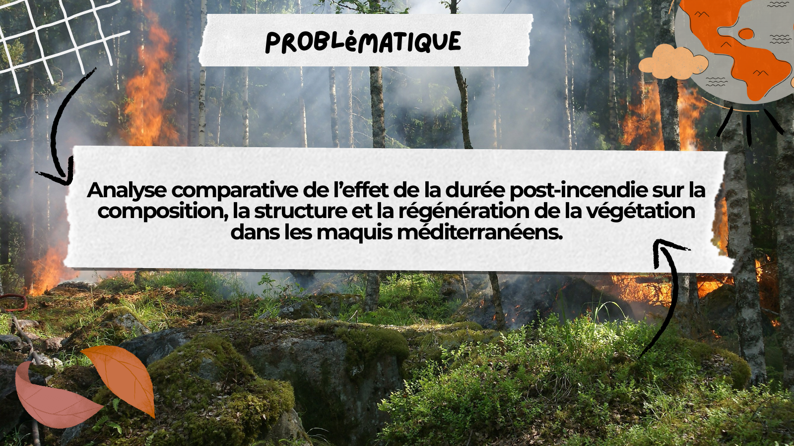
Agrandir la preuveÀ regarder : la comparaison des durées post-incendie, qui organise les protocoles proposés.
Lire les pages sélectionnées ↗Le journal consigne un retour précis : resserrer la problématique, clarifier les objectifs, réduire les mesures et garder les protocoles réellement faisables. Les retours du jury demandaient aussi un titre plus accrocheur, une carte plus lisible et une date sur les photos. Mon carnet personnel dit que les modifications ont parfois été frustrantes, mais qu’elles ont rendu le projet plus cohérent.
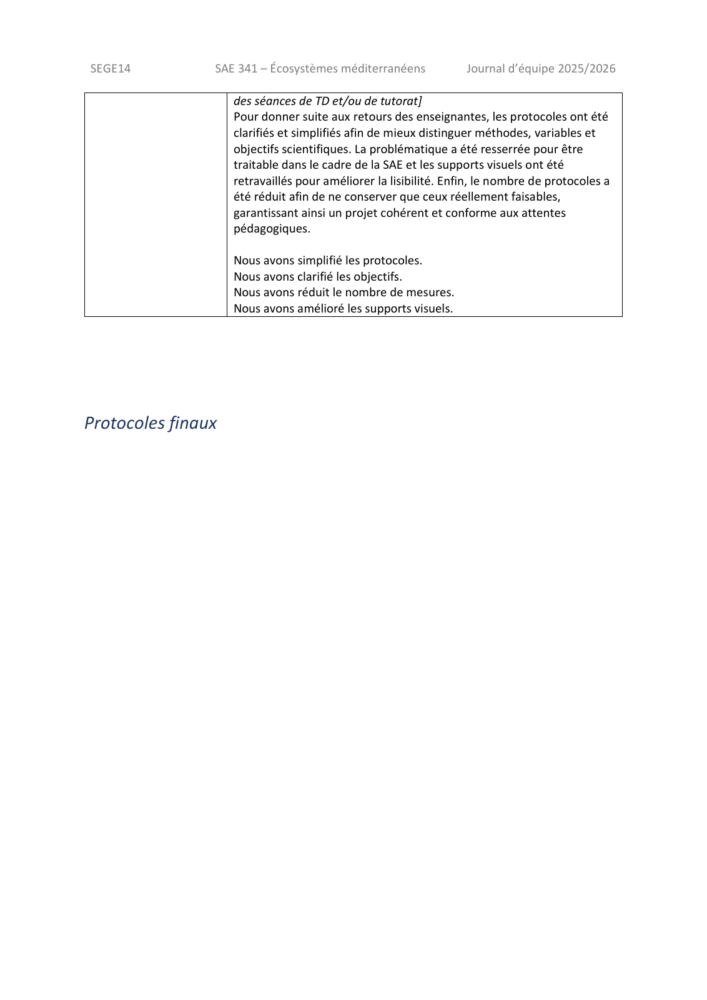
Agrandir la preuveSurligné dans le texte : simplifier n’est pas appauvrir : c’est rendre la démarche réalisable.
Lire les pages sélectionnées ↗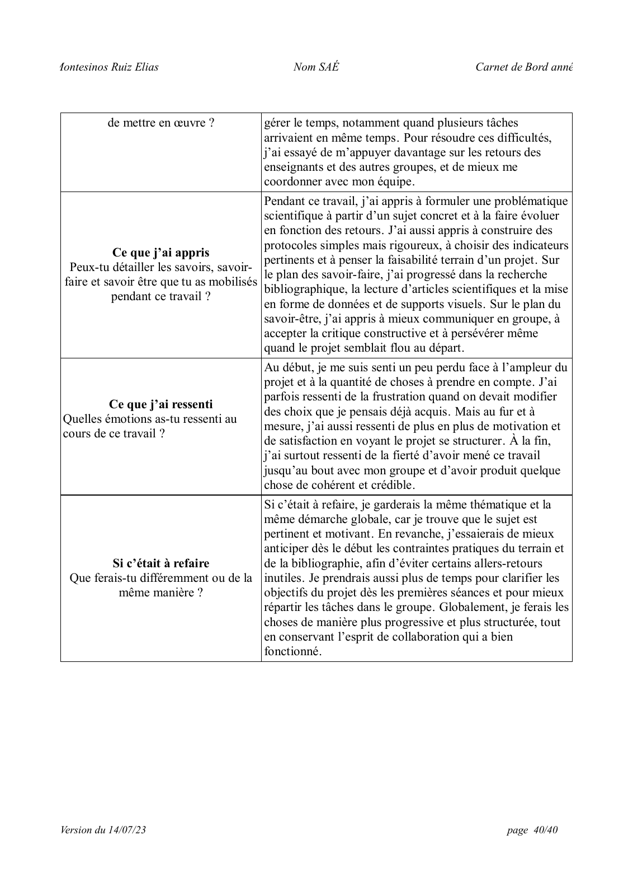
Agrandir la preuveÀ regarder : j’identifie ma difficulté d’anticipation et ce que je ferais différemment.
Lire les pages sélectionnées ↗Ce qui change en L2 : je sais mieux relier une problématique aux sites, aux protocoles, aux rôles de chacun et aux retours du jury.
L3 · SAÉ54 · Start’up
WildWay est un projet de bureau d’études imaginé pour mieux repérer les zones de collision avec la faune, à partir de signalements et de vérifications. La présentation pose le problème écologique ; la fiche contexte nomme les destinataires, notamment les gestionnaires d’infrastructures. La charte fixe le périmètre, les objectifs et les rôles envisagés. Le rétroplanning rend visible l’ordre des étapes.
Par rapport à Élec’Sport, le cadrage est plus détaillé. Mais le vocabulaire de la charte promet parfois des effets que nous n’avons pas encore mesurés : l’application, l’algorithme et les cartes sont des éléments projetés. Le travail de L3 consiste aussi à séparer l’ambition, l’argument bibliographique et ce que le projet aura vraiment réalisé.
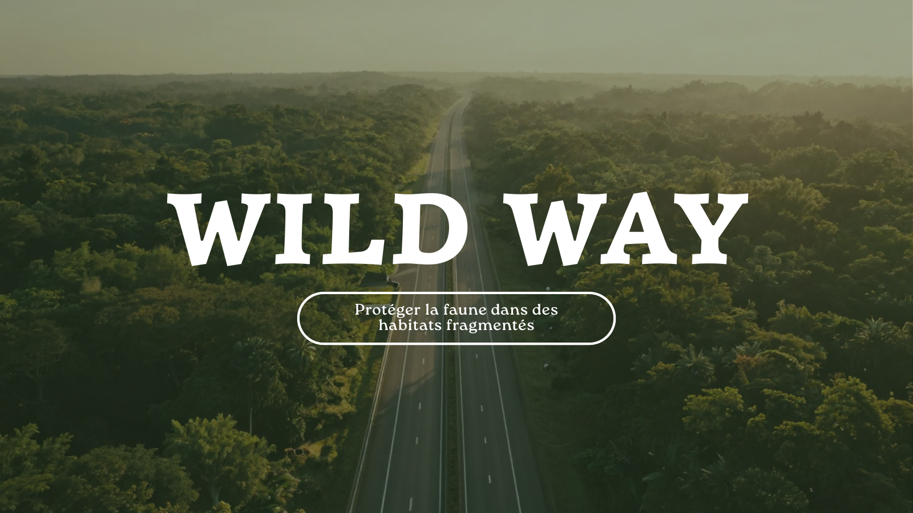
Agrandir la preuveÀ regarder : le thème de la fragmentation des habitats ; le reste de la présentation détaille la proposition.
Lire les pages sélectionnées ↗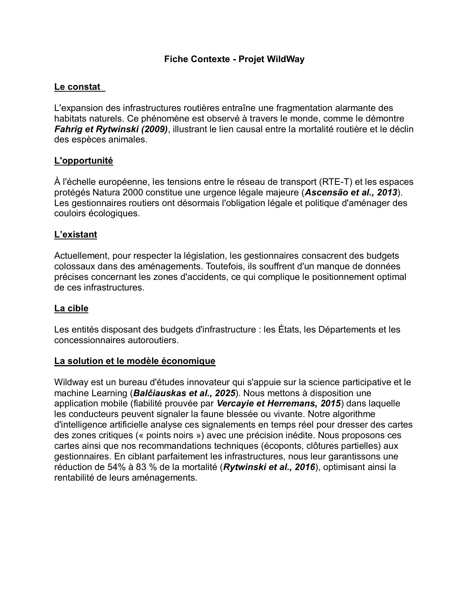
Agrandir la preuveÀ regarder : mortalité routière, manque de données locales et destinataires de la solution.
Lire les pages sélectionnées ↗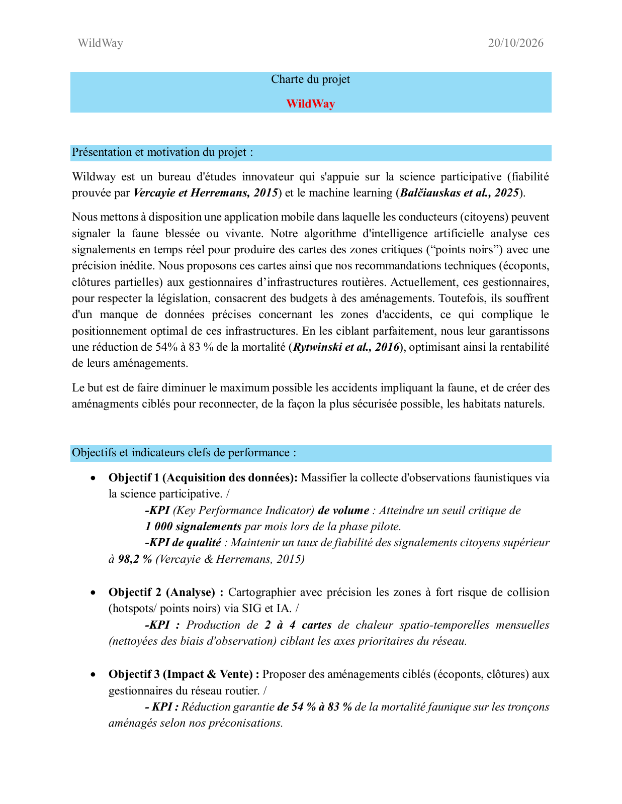
Agrandir la preuveÀ regarder : des indicateurs sont proposés. Ils n’attestent pas d’un effet déjà obtenu.
Lire les pages sélectionnées ↗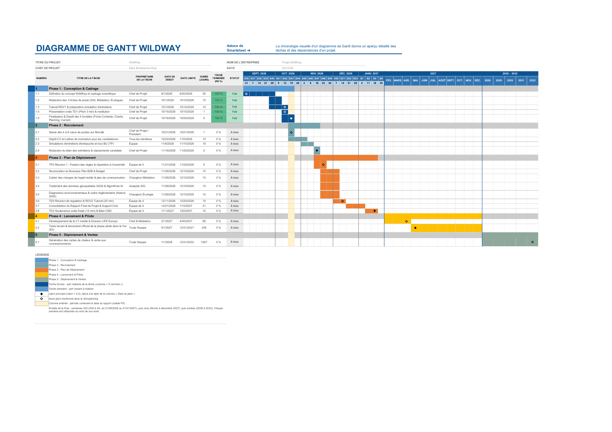
Agrandir la preuveÀ regarder : l’enchaînement prévu ; les étapes futures restent à compléter au fil de la SAÉ.
Lire les pages sélectionnées ↗Ce qui change en L3 : le projet articule mieux problème, public, contraintes et phases, tout en me demandant de rester prudent sur les promesses.
Comprendre les enjeux d’un projet environnemental, puis relier la question aux sites, aux acteurs et aux données disponibles.
Poser des objectifs, contribuer à un journal d’équipe, lire et construire un planning, comparer des protocoles et reformuler après retour.
Écouter les autres, accepter une correction et rendre visible ma contribution sans m’attribuer tout le travail collectif.
Phénix Végétal m’a appris à rendre une idée faisable. WildWay est plus proche de ce que je veux faire : travailler sur la faune et ses milieux. Je veux maintenant documenter ce qui sera réellement mis en œuvre, pas seulement ce qui est prévu.